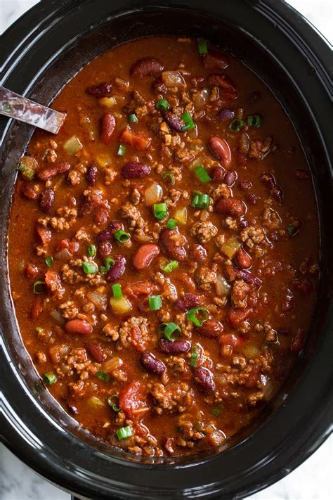

Chili

Description
This chili is easy, cooks in a few hours. It doesn't need a lot of reparation.
Ingredients
- Ground turkey, 1 pound
- one packet chili seasoning
- one can light red kidney beans
- one 28+ oz can diced tomatoes
- one green pepper
- one small onion
- One bag of cook-in-a-bag of rice (wheat or white)
Steps
- Brown the turkey
- While turkey is browning:
- dice the green pepper and onion
- open the cans
- Put the tomatoes into the crock pot
- Add the meat once browned.
- Add in seasoning, pepper, onion, and beans
- Stir thoroughly
- Cook on low for 7 hours, or high for 4 hours
- About 30 minutes before the cooking is done, cook the rice
- When the rice is done, add it to the chili and stir
- Cook for 15 minutes on high
Serve with cheese, sour cream, tortilla chips.
Serves four to six meals.